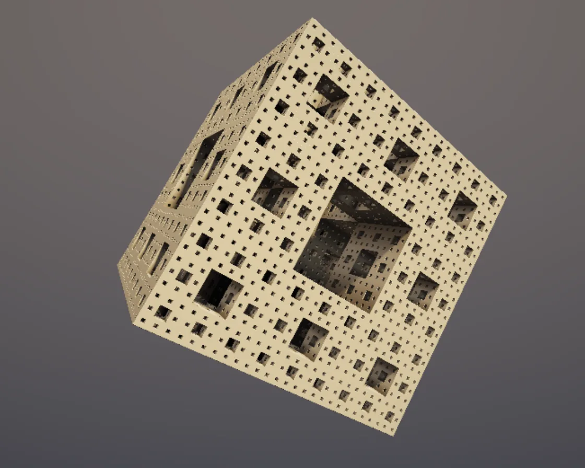

Menger sponge
Menger sponge is a WebGL effect: box minus a cross, repeated by folding space each level. One plain JavaScript file with no dependencies; add it with npx motion-library add menger-sponge.

Open it live, tune it and copy the code
What is Menger sponge?
A brass Menger sponge turns in a studio, its tunnels darkening inward.
How does Menger sponge work?
One box SDF and a short loop: fold space into cells with mod and subtract a cross three times thinner each level; depth gives free ambient occlusion.
How do I add Menger sponge to my website?
- In your project folder, run
npx motion-library add menger-sponge. It writesanimations/menger-sponge.js. Needs Node 18 or newer. - Import it and call it with a container element that has a size:
import fx from './animations/menger-sponge.js'; const stop = fx(document.querySelector('#hero')); - Call
stop()to clean up, for example when a component unmounts.
Every setting below is also a flag, so you can install it already tuned: npx motion-library add menger-sponge --levels 5.
What settings can I tweak?
| Setting | Flag | Default | Range | Step |
|---|---|---|---|---|
| Levels | --levels | 4 | 1 to 5 | 1 |
| Speed | --speed | 1 | 0 to 2.5 | 0.05 |
Specifications
- Renderer
- WebGL
- Category
- Chrome & 3D
- Dependencies
- None
- File size
- 5.9 KB, unminified
- Interactive
- No: it plays on its own
- Reduced motion
- Plays the same for everyone
- Licence
- MIT-0: use it anywhere, no credit needed
Source code
// Menger sponge: a cube with its centre cross carved out, then the same carved out of each of the 20 smaller cubes
// left, and so on. As a distance function that is one box plus a loop: fold space into repeating cells (mod), and at
// each level subtract a cross three times thinner. The raymarcher counts the levels to shade the deep holes darker,
// the brass catches a studio light and a soft shadow is marched toward the lamp. The camera drifts in toward a face.
const PARAMS = { levels: 4, speed: 1 };
export default function (stage) {
const canvas = document.createElement('canvas');
canvas.style.cssText = 'position:absolute;inset:0;width:100%;height:100%;display:block';
stage.append(canvas);
const gl = canvas.getContext('webgl2', { antialias: false });
if (!gl) { stage.textContent = 'This needs WebGL2.'; return () => canvas.remove(); }
const vs = `#version 300 es
in vec2 p; out vec2 uv; void main() { uv = p * .5 + .5; gl_Position = vec4(p, 0, 1); }`;
const fs = `#version 300 es
precision highp float; in vec2 uv; out vec4 o;
uniform vec2 R; uniform float T; uniform int L; uniform mat3 ROT; uniform vec3 CE, CF, CR, CU;
float sdBox(vec3 p, vec3 b) { vec3 q = abs(p) - b; return length(max(q, 0.)) + min(max(q.x, max(q.y, q.z)), 0.); }
// x: distance, y: how deep in the holes (for occlusion)
vec2 map(vec3 p) {
p = ROT * p;
float d = sdBox(p, vec3(1)), s = 1., occ = 1.;
for (int m = 0; m < 6; m++) {
if (m >= L) break;
vec3 a = mod(p * s, 2.) - 1.; s *= 3.;
vec3 r = abs(1. - 3. * abs(a));
float da = max(r.x, r.y), db = max(r.y, r.z), dc = max(r.z, r.x);
float c = (min(da, min(db, dc)) - 1.) / s; // the cross at this level
if (c > d) { d = c; occ = min(occ, .25 * da * db * dc); }
}
return vec2(d, occ);
}
vec3 nrm(vec3 p) { vec2 e = vec2(.0007, -.0007); return normalize(e.xyy * map(p + e.xyy).x + e.yyx * map(p + e.yyx).x + e.yxy * map(p + e.yxy).x + e.xxx * map(p + e.xxx).x); }
float shadow(vec3 ro, vec3 rd) { float r = 1., t = .01; for (int i = 0; i < 48; i++) { float h = map(ro + rd * t).x; r = min(r, 10. * h / t); t += clamp(h, .005, .1); if (r < .001 || t > 4.) break; } return clamp(r, 0., 1.); }
vec3 aces(vec3 x) { return clamp((x * (2.51 * x + .03)) / (x * (2.43 * x + .59) + .14), 0., 1.); }
void main() {
vec2 q = (uv * 2. - 1.) * vec2(R.x / R.y, 1.);
vec3 ro = CE, rd = normalize(CF * 1.8 + CR * q.x + CU * q.y);
vec3 bg = mix(vec3(.05, .055, .07), vec3(.16, .14, .13), uv.y * .6 + .2);
vec3 col = bg; float t = 0.; vec2 h; bool hit = false;
for (int i = 0; i < 160; i++) { h = map(ro + rd * t); if (h.x < .0004 * (1. + t)) { hit = true; break; } t += h.x; if (t > 12.) break; }
if (hit) {
vec3 p = ro + rd * t, n = nrm(p), L1 = normalize(vec3(.6, .8, .4));
float dif = max(dot(n, L1), 0.) * shadow(p + n * .002, L1), sky = .5 + .5 * n.y, back = max(dot(n, -L1 * vec3(1, 0, 1)), 0.);
float occ = clamp(h.y * 1.4, 0., 1.);
vec3 brass = vec3(.86, .66, .38);
vec3 r = reflect(rd, n);
float spec = pow(max(dot(r, L1), 0.), 40.) * dif;
col = brass * (dif * vec3(1.25, 1.1, .95) + sky * vec3(.12, .14, .2) * occ + back * vec3(.08, .07, .1)) * (.3 + .7 * occ) + spec * vec3(1.2, 1., .8);
col += brass * .5 * mix(vec3(.05), vec3(.5, .45, .4), smoothstep(-.2, .6, r.y)) * occ * pow(1. - max(dot(n, -rd), 0.), 2.); // a little sheen at grazing angles
col = mix(col, bg, smoothstep(4., 11., t));
}
col = aces(col);
col *= 1. - .3 * pow(length(uv - .5) * 1.25, 2.);
o = vec4(pow(col, vec3(1. / 2.2)), 1);
}`;
const sh = (t, s) => { const x = gl.createShader(t); gl.shaderSource(x, s); gl.compileShader(x); if (!gl.getShaderParameter(x, gl.COMPILE_STATUS)) throw new Error(gl.getShaderInfoLog(x)); return x; };
const prog = gl.createProgram(); gl.attachShader(prog, sh(gl.VERTEX_SHADER, vs)); gl.attachShader(prog, sh(gl.FRAGMENT_SHADER, fs)); gl.bindAttribLocation(prog, 0, 'p'); gl.linkProgram(prog); gl.useProgram(prog);
gl.bindBuffer(gl.ARRAY_BUFFER, gl.createBuffer()); gl.bufferData(gl.ARRAY_BUFFER, new Float32Array([-1, -1, 3, -1, -1, 3]), gl.STATIC_DRAW);
gl.enableVertexAttribArray(0); gl.vertexAttribPointer(0, 2, gl.FLOAT, false, 0, 0);
const U = {}; ['R', 'T', 'L', 'ROT', 'CE', 'CF', 'CR', 'CU'].forEach(n => U[n] = gl.getUniformLocation(prog, n));
const resize = () => { const w = stage.clientWidth || 1, h = stage.clientHeight || 1, d = Math.min(devicePixelRatio, Math.max(1, Math.sqrt(340000 / (w * h)))); canvas.width = w * d | 0; canvas.height = h * d | 0; gl.viewport(0, 0, canvas.width, canvas.height); };
const ro = new ResizeObserver(resize); ro.observe(stage); resize();
const nrm = a => { const l = Math.hypot(...a); return a.map(v => v / l); };
let raf; const t0 = performance.now();
function frame(now) {
const t = (now - t0) / 1000 * PARAMS.speed;
const ya = t * 0.18 + 0.6, pa = 0.5 + Math.sin(t * 0.13) * 0.15, cy = Math.cos(ya), sy = Math.sin(ya), cp = Math.cos(pa), sp = Math.sin(pa);
const rot = new Float32Array([cy, sp * sy, -cp * sy, 0, cp, sp, sy, -sp * cy, cp * cy]);
const asp = canvas.width / canvas.height, dist = (4.3 - 0.9 * (0.5 + 0.5 * Math.sin(t * 0.21))) * Math.max(1, 1.15 / asp); // drift in and out
const eye = [0.25, 0.35, dist], f = nrm(eye.map(v => -v)), r = nrm([-f[2], 0, f[0]]), u = [r[1] * f[2] - r[2] * f[1], r[2] * f[0] - r[0] * f[2], r[0] * f[1] - r[1] * f[0]];
gl.uniform2f(U.R, canvas.width, canvas.height); gl.uniform1f(U.T, t); gl.uniform1i(U.L, Math.round(PARAMS.levels));
gl.uniformMatrix3fv(U.ROT, false, rot); gl.uniform3fv(U.CE, eye); gl.uniform3fv(U.CF, f); gl.uniform3fv(U.CR, r); gl.uniform3fv(U.CU, u);
gl.drawArrays(gl.TRIANGLES, 0, 3);
raf = requestAnimationFrame(frame);
}
raf = requestAnimationFrame(frame);
return () => { cancelAnimationFrame(raf); ro.disconnect(); gl.getExtension('WEBGL_lose_context')?.loseContext(); canvas.remove(); };
}